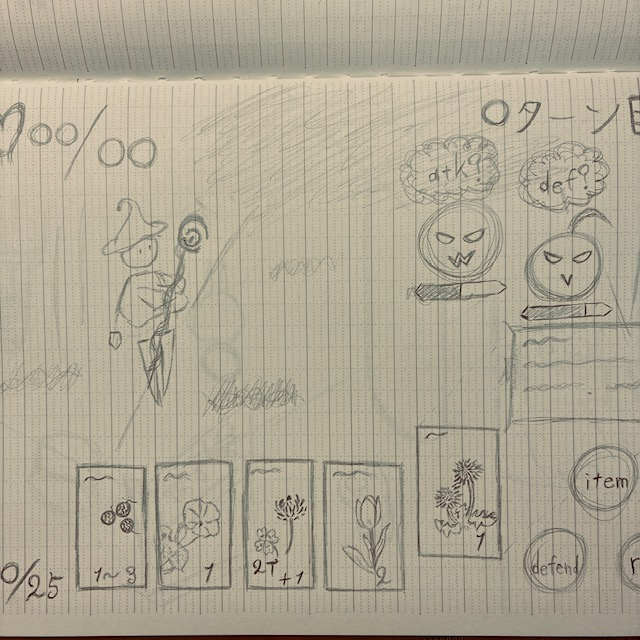

STAGE 00
好きなことへの挑戦を続けながら、 多くの人へ楽しさを届けるライバーを目指しています。

私の原動力は「面白そうなものにはとりあえずやってみる」です。
ゲーム制作、イラスト、小説、プログラミングなど、 自分が興味を持ったものには積極的に挑戦してきました。
その結果、それぞれが独立した趣味ではなく、 これまでなかった、私が思い描くアイデアを生み出すための力になっています。
私は、趣味をスキルに変え、 スキルを新たなエンターテイメントへとつなげることを大切にしています。
これからも挑戦を続けながら、 多くの人に楽しさを届けられる存在を目指していきます。
Webサイト制作のために学習中 本ポートフォリオでも学習の一環として使用
自身のアイデアを形にするため、ゲーム制作を目的に学習
Unity以外の開発環境として学習開始 様々な制作手法を学習中
ゲームを始め創作活動のために勉強開始（2年ほど）
ゲームのシナリオのため開始（具体的な成果については下記）
RPG・謎解き・アクションなど幅広くプレイ 特に物語性のある作品が好き（うたわれるもの、幻想水滸伝ティアクライス）
特にBGMが好み 音楽が風景を想起させることに興味がある
ゲーム制作のために開始
自分のアイデアを形にするために開始 ゲームのシナリオを目標に、連載作品を執筆
週間ランキング17位
月間ランキング66位
多彩な趣味から得た経験とスキルを活かし、 自分自身も楽しみながら多くの人に向けて、 新しいエンターテイメントを届けられるライバーを目指しています。